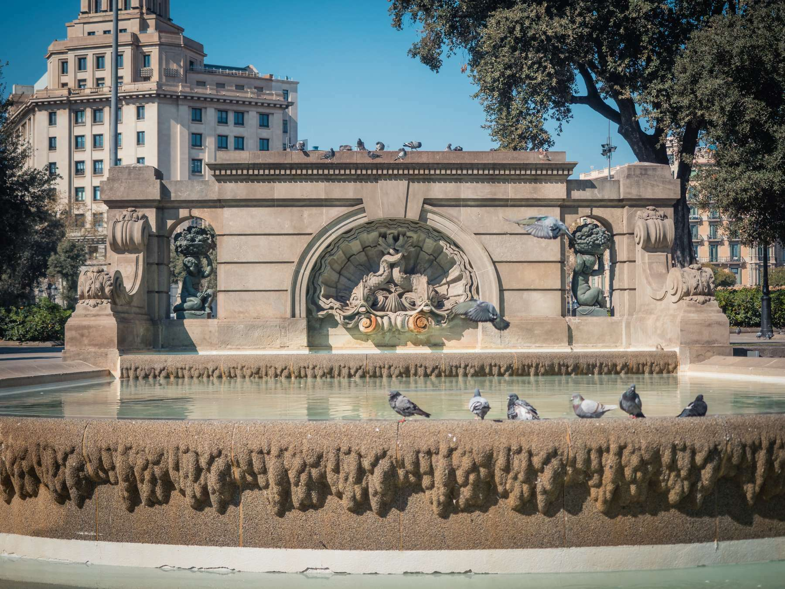
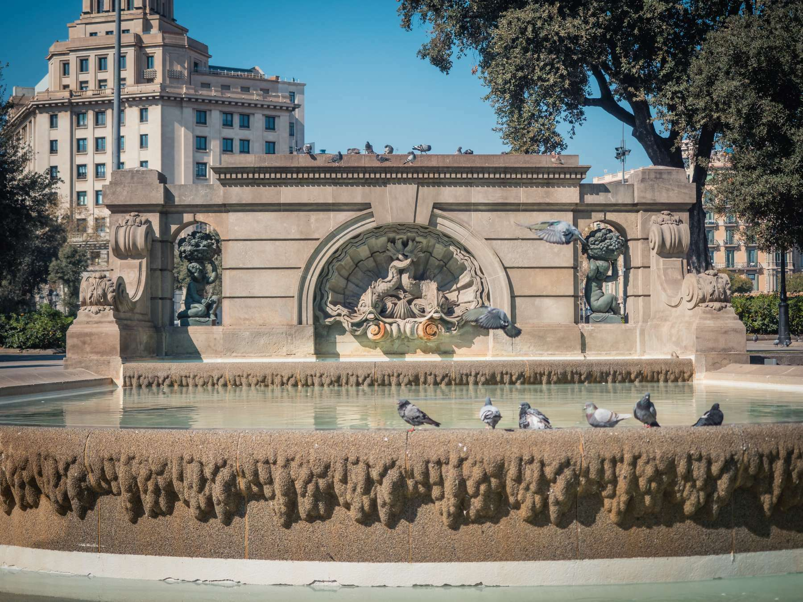
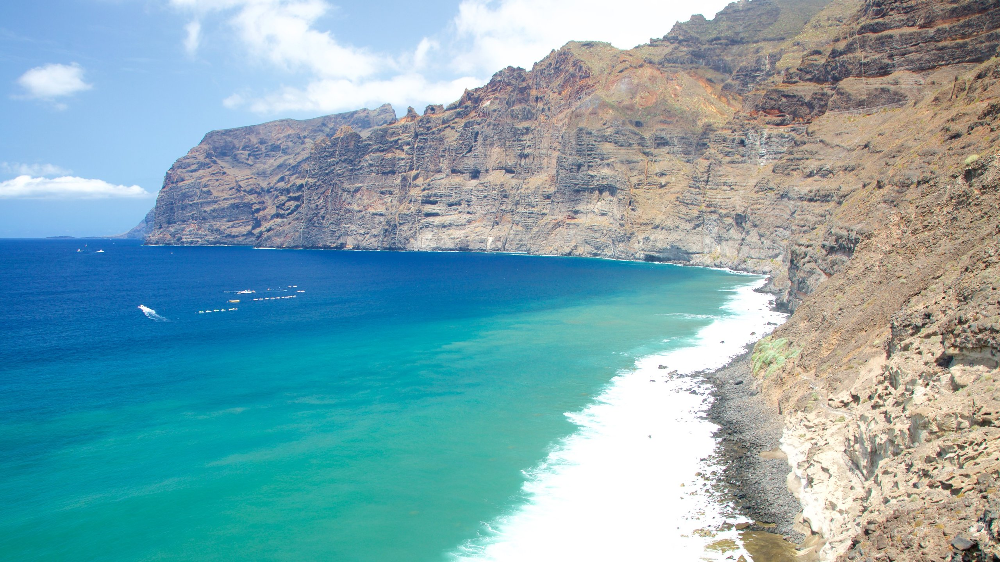
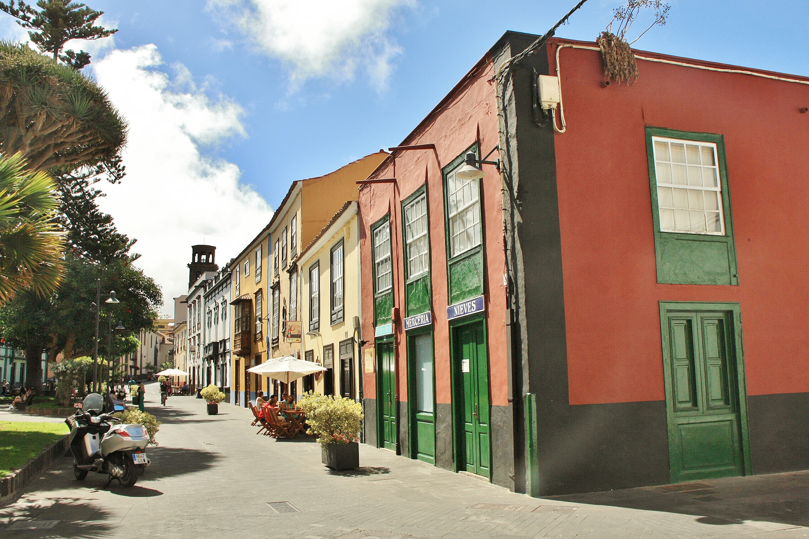
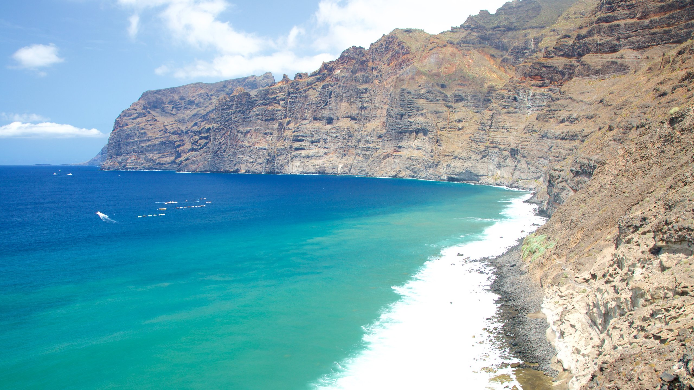
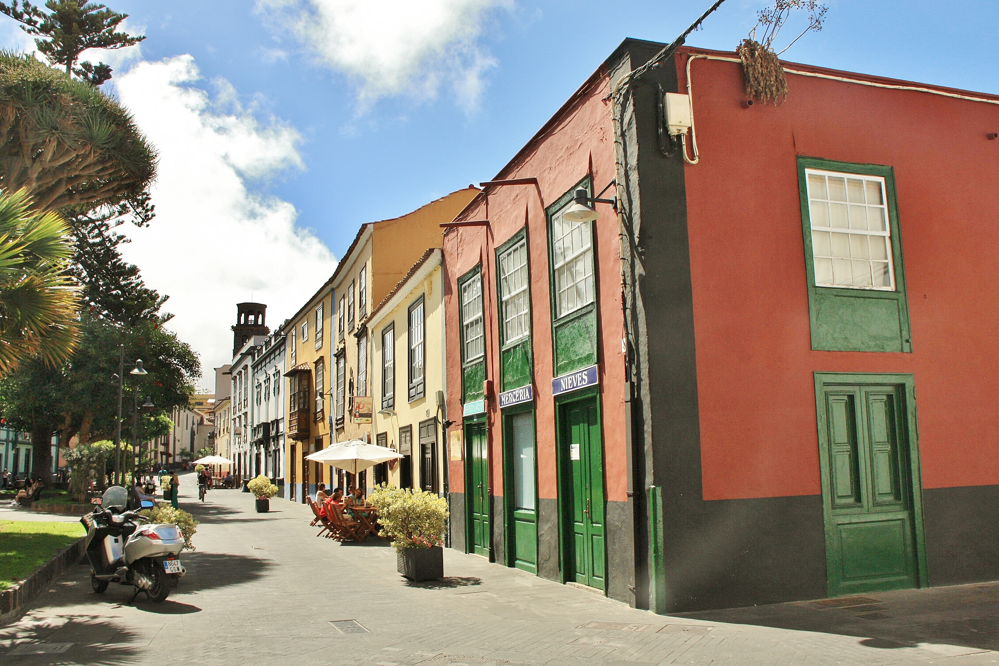

Hiszpania, kraina pasji i bogactwa kulturowego, otwiera przed tobą drzwi do niezwykłego świata, gdzie historia splata się z współczesnością, tworząc niezapomnianą podróż przez czas i przestrzeń. To kraj, w którym każdy krok to spotkanie z dziedzictwem starożytnych cywilizacji, arabskim wpływem oraz barwną historią królestwa Hiszpanii.
Spacerując po urokliwych uliczkach hiszpańskich miast, wdzierasz się w gęste mury średniowiecznych twierdz i labiryntuą klatkę schodową arabskich medyn. Architektura Hiszpanii wyróżnia się różnorodnością i bogactwem stylów, od majestatycznych katedr gotyckich po barwne pałace maurów. To fascynująca mieszanka przeszłości i teraźniejszości, która otwiera drzwi do magicznego świata pełnego kontrastów i harmonii.
Jednak Hiszpania to nie tylko zabytki i architektura - to także ognisko życia kulturalnego, gdzie flamenco bije w rytm serca i sztuka bullfightingu wciąż budzi emocje. W muzeach takich jak Prado w Madrycie czy Picasso w Barcelonie można podziwiać dzieła mistrzów malarstwa, które ożywają przed oczami, opowiadając historię narodu i jego ducha.
Hiszpańska kuchnia to prawdziwy festiwal smaków i aromatów, gdzie tradycyjne tapasy, paella i sangria kuszą zmysły i rozgrzewają serca. Każdy posiłek to ceremonia, podczas której dzielisz się nie tylko jedzeniem, ale także chwilą radości i wspólnoty z rodziną i przyjaciółmi. To kulinarne doświadczenie, które pozostawia niezatarte wrażenie i pragnienie powrotu.
Hiszpania to niezwykłe miejsce, które przyciąga swoim magnetyzmem i różnorodnością. Niezależnie od tego, czy odkrywasz tajemnice starożytnych ruin, relaksujesz się na złocistych plażach Costa del Sol czy też zakochujesz się w klimacie śródziemnomorskich miasteczek, Hiszpania zawsze wita cię z otwartymi ramionami i zaprasza do głębokiego zanurzenia w swoim bogactwie kulturowym i przyrodniczym. Viva España!
Miasta, które warto odwiedzić
Madryt
Stolica Hiszpanii, pełna życia i kultury. Rozpoczynamy naszą podróż od Pałacu Królewskiego, imponującej rezydencji królewskiej, gdzie można poczuć ducha monarchii hiszpańskiej. Następnie udajemy się do Placu Puerta del Sol, serca miasta, znanego z zegara słonecznego i spotkań towarzyskich. Na koniec nie można pominąć Prado, jednej z najważniejszych galerii sztuki na świecie, gdzie można podziwiać arcydzieła takich mistrzów jak Velázquez, Goya czy El Greco.
Barcelona
Perła Morza Śródziemnego, miasto pełne energii i wyjątkowej architektury. Rozpoczynamy od Bazyliki Sagrada Familia, niezwykłej świątyni projektu Antoniego Gaudiego, która zachwyca swoją niezwykłą formą i detalem. Następnie kierujemy się do Placu Katalońskiego, centralnego punktu miasta, otoczonego sklepami, restauracjami i artystami ulicznymi. Na koniec warto odwiedzić Park Güell, pełen kolorowych mozaik, fontann i niezwykłej architektury, który oferuje niesamowite widoki na miasto.
 

Sevilla
Miasto tańca, muzyki i tradycji. Nasza podróż rozpoczyna się od Alcazaru, dawnego pałacu królewskiego z przepięknymi ogrodami, fontannami i kolumnadami, który zachwyca swoją muzułmańską architekturą. Następnie udajemy się do Katedry w Sewilli, największej gotyckiej katedry na świecie. Na koniec nie można pominąć Plaza de España, uważanej za jedno z najpiękniejszych miejsc w Hiszpanii, z charakterystycznym półokrągłym budynkiem i kanałami.
Granada
Perła Andaluzji, gdzie historia, sztuka i przyroda tworzą niezwykłą harmonię. Rozpoczynamy od Alhambry, kompleksu pałacowego i twierdzy, który jest jednym z najwspanialszych przykładów muzułmańskiej architektury w Europie. Następnie warto odwiedzić Generalife, ogrody pałacowe pełne fontann, kwiatów i zacienionych alejek, które oferują chwilę spokoju i relaksu. Na koniec nie można zapomnieć o Mezquitcie - dzielnicy arabskiej, gdzie wąskie uliczki, sklepiki i kawiarnie tworzą niepowtarzalny klimat.

Teneryfa
Największa z Wysp Kanaryjskich, znana ze swojego wulkanicznego krajobrazu i subtropikalnego klimatu. Rozpoczynamy od Teide, najwyższego szczytu Hiszpanii, który oferuje spektakularne widoki na wyspę i otaczający ocean. Następnie warto odwiedzić Los Gigantes, imponujące klify sięgające nawet 800 metrów wysokości, które tworzą malowniczy widok nad Oceanem Atlantyckim. Na koniec nie można przegapić La Laguna, historycznego miasta wpisanego na listę światowego dziedzictwa UNESCO, gdzie można spacerować po urokliwych uliczkach, podziwiać kolonialną architekturę i poczuć atmosferę dawnej hiszpańskiej kolonii.
 


